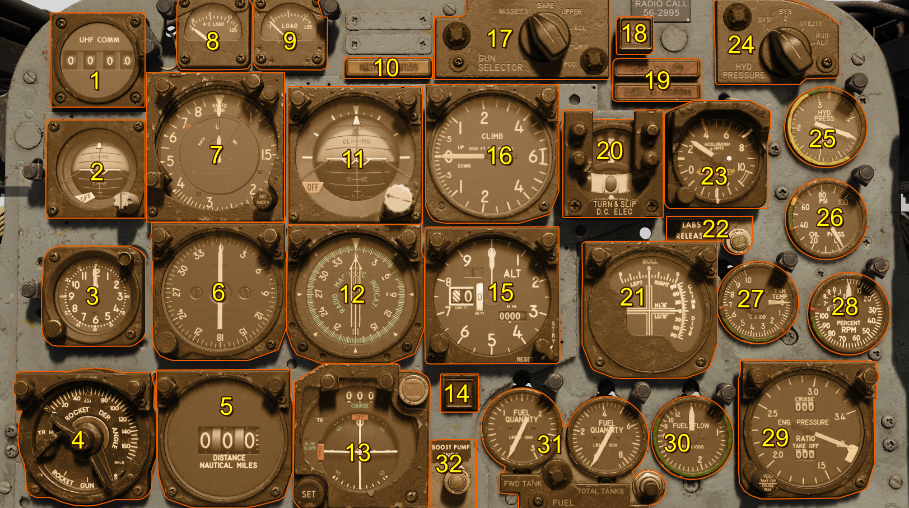

Instrument Panel
The instrument panel of the F-100D contains a careful selection of essential gauges for basic operation, navigation, and system monitoring. All gauges suffer from installation error and other errors as a result of wear and tear. During the time period, it was not uncommon to leave a majority of the aircraft's gauges unmaintained. Thus, the pilot will notice frictional spikes and slight reading errors of which are modeled in the DCS: F-100D Super Sabre.

In this section, the primary flight instruments needed for basic operation of the aircraft will be discussed. For more in depth coverage, please visit the respective system's section.
| Reference | Name |
|---|---|
| 1 | Command Radio Remote Channel Indicator |
| 2 | Standby Attitude Indicator |
| 3 | Clock |
| 4 | Sight Selector Unit |
| 5 | Tacan Range Indicator |
| 6 | Master Heading Indicator |
| 7 | Airspeed and Mach Indicator |
| 8 | AC Load Meter |
| 9 | DC Load Meter |
| 10 | Master Caution Light |
| 11 | Attitude Indicator |
| 12 | Radio Magnetic Indicator |
| 13 | Course Indicator |
| 14 | Tacan ILS Light - inoperative |
| 15 | Altimeter |
| 16 | Vertical Velocity Indicator |
| 17 | Gun Missile Switch |
| 18 | Attitude Indicator Fast Erection Button |
| 19 | Fire and Overheat Warning Lights |
| 20 | Turn and Slip Indicator |
| 21 | LABS Dive and Roll Indicator |
| 22 | LABS Release Indicator Light |
| 23 | Accelerometer |
| 24 | Hydraulic Pressure Gauge Selector Switch |
| 25 | Hydraulic Pressure Gauge |
| 26 | [Oil Pressure Gauge] |
| 27 | [Exhaust Temperature Gauge] |
| 28 | [Tachometer (RPM)] |
| 29 | [Engine Pressure Ration Gauge] |
| 30 | Fuel Flow Indicator |
| 31 | Fuel Quantity Gauges |
| 32 | Fuel Boost Pump INOP Light |
Airspeed and Mach Indicator
The aircraft's air data computer (ADC) computes the velocity based on temperature and pressure signals received by the pitot-static system. Specifically, it takes the difference between measured total and static pressure to compute dynamic pressure. Loss of either the pitot tube or static ports will manifest in inaccurate airspeed readings.
The airspeed indicator also introduces installation and position errors which will introduce errors in readings of up to 10 knots.
The Mach number is computed in the same manner to display the aircraft's velocity as a multiple of the speed of sound at the local pressure altitude.
These two readings are displayed as a combined Airspeed and Mach indicator. The inner reading displays the Airspeed between x to x and the outer reading displays the Mach number between x to x. An index marker, set by the pilot, can also be used via a push-and-rotate actuation of the index knob.
Attitude Indicator
One of the most important instruments is the attitude indicator. Driven by a an electric motor, a double mounted gyro maintains its vertical upright alignment while the aircraft maneuvers. However, the indicator is subject to precession errors, but it re-aligns with a self-erecting mechanism.
A knob provides the pilot ability to adjust the reference up and down to align the it with the displayed artificial horizon.
Turn and Slip Indicator
A standard turn and slip indicator provides turn direction and rate information via a vertical needle. A standard 4 minute instrument turn places the vertical turn needle over the the corresponding direction's hash mark.
The slip indicator displays horizontal accelerations in the lateral plane with a slip ball. For coordinated turns, use a combination of the rudder and the aircraft's yaw damper to center the slip ball.
Accelerometer
An accelerometer measures the aircraft's G load in the normal axis. The accelerometer has 3 needles: one for maximum positive G load, one for maximum negative G load, and one for current G load. To reset, use the push-to-reset knob which will zeroize the maximum and minimum G load needles.
Altimeter
The altimeter displays the static system's current reading corrected for non standard temperature set by the pilot via a rotate actuation on the Altimeter's pressure setting knob. The current pressure setting is displayed in the Kollsman's window and is usually set to the local sea-level pressure in inches of mercury. Correct application of the local sea-level pressure setting will display the aircraft's mean-sea-level altitude on the altimeter.
The altimeter can operate in two modes: servoed and standby. In standby mode the altimeter acts as a normal pressure based altimeter with any static port errors. In servoed mode the altimeter instead displays the corrected values from the air data computer.
To set the altimeter into servoed mode hold the reset switch on the face of the altimeter to the reset position until the standby flag is no longer shown.
Vertical Velocity Indicator
The vertical velocity indicator computes the aircraft's vertical velocity, in feet per minute, via static pressure signals from the ADC. Lag is an inherent consequence of the design of the indicator and can result in readings often delayed up to 6 seconds. Much like the airspeed indicator, the vertical velocity indicator suffers from substantial positional and gauge installation errors and can often read up to 500 feet per minute.
Clock
The ABU-11 clock has two ways of keeping time. On the clock face, you have two hands that work as a regular 12 hour clock with no AM or PM setting. Another set of hands will act as a stopwatch showing you seconds and minutes.
On the clock, you have two dials. The dial to the bottom left works as time adjustment and the one at the top right works as a START/STOP/RESET function for the stopwatch.
Standby Attitude Indicator
The Standby Attitude Indicator is a backup to the Attitude Indicator. The systems work identically to each other however, they are using independent gyros.
Like the Attitude Indicator, it has an adjustment knob on the gauge.
Attitude Indicator Fast Erection Button
This button marked "PUSH VGI ERECT", permits fast erection of the attitude gyros only when the button is depressed. Please note, you may have to hold the button a while depending on how misaligned the gyro has become.